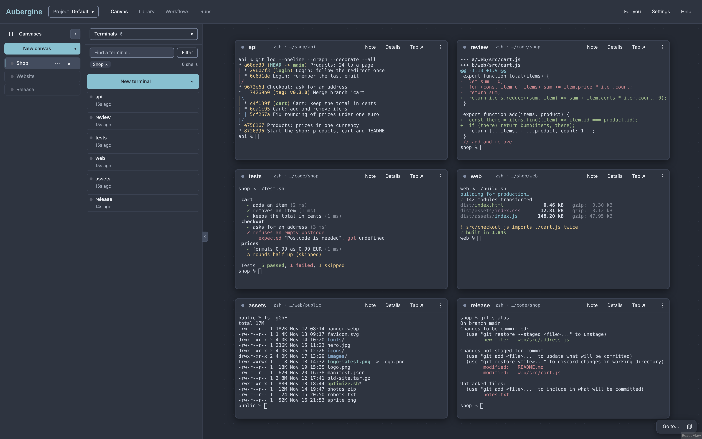
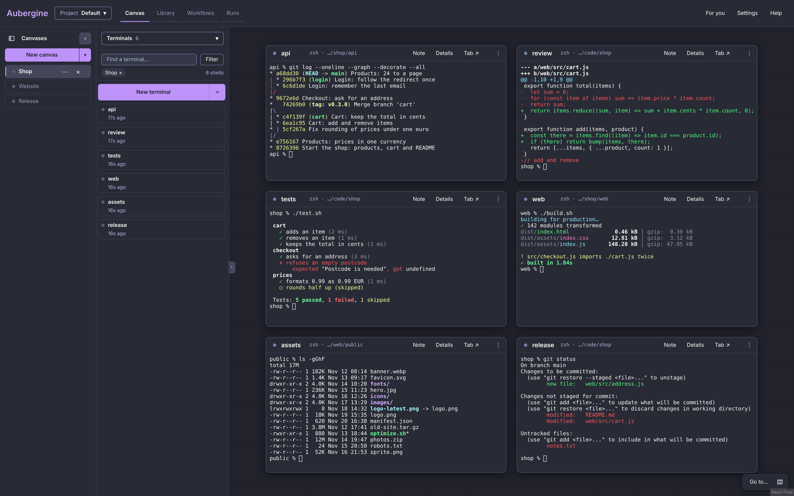
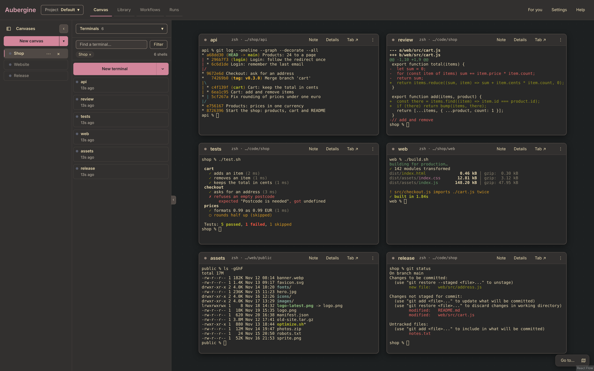

- টার্মিনালকে নতুন করে ভাবুন
- বিনামূল্যে
- ওপেন সোর্স
- আপনার কম্পিউটারে চলে
মিশন কন্ট্রোল, আপনার টার্মিনাল আর AI কোডিং এজেন্টদের জন্য।
Claude Code, Codex আর সাধারণ টার্মিনাল ব্রাউজারে একটি ড্যাশবোর্ডে পাশাপাশি চালান। Aubergine-এর নিজের কোনো মডেল নেই, আর এটি কখনো কোনো key চায় না।
npm install -g @meatgarden/aubergine
তারপর aubergine start --open। macOS-এর জন্য, tmux 3.2 বা নতুনতর আর Node.js 22 বা নতুনতর সহ।

Aubergine-এর সঙ্গে আসা ডেমোর আসল ক্যাপচার: একটি ক্যানভাসে ছয়টি টার্মিনাল, আর সেই একটি যেটি আপনার অপেক্ষায়।
টার্মিনাল ম্যানেজমেন্টে নতুন ভাবনা
যে টার্মিনালগুলো আপনি আগে থেকেই ব্যবহার করেন, সঙ্গে যা তাদের এতদিন ছিল না: পাশাপাশি থাকার একটি জায়গা, একটি স্মৃতি, আর আপনাকে দরকার হলে জানানোর একটি উপায়।
আপনার প্রোডাক্টিভিটি বাড়ান
একাধিক এজেন্ট একসঙ্গে কাজ করে, প্রত্যেকে নিজের টার্মিনালে। যে অপেক্ষা করছে তাকে উত্তর দিন, বাকিরা চলতে থাকুক।
আরও ভালো ডেভেলপার এক্সপেরিয়েন্স
প্রতিটি টার্মিনালের একটি নাম, একটি রং, একটি নোট আর ক্যানভাসে তার জায়গা আছে। ব্রাউজার বন্ধ করুন বা Aubergine রিস্টার্ট করুন: সব যেমন ছিল তেমনই থাকে।
কিছুই বদলাতে হবে না
আপনার শেল, আপনার টুল, আপনার এজেন্ট আর আপনার মডেল, যেমন আছে তেমনই। Aubergine এদের চারপাশে ক্যানভাস যোগ করে, আর এর নিজের কোনো মডেল নেই।
দেখতে কেমন
Aubergine-এর সঙ্গে আসা ডেমোর আসল ক্যাপচার: নকল এজেন্ট, আসল নয়।
প্রতিটি টার্মিনাল এক ক্যানভাসে
যত খুশি, পাশাপাশি, আর প্রতিটি যতক্ষণ চোখে পড়ছে ততক্ষণ লাইভ।

যেটি অপেক্ষা করছে, সেটি আলাদা করে চোখে পড়ে
কোনো এজেন্টের আপনাকে দরকার হলে ক্যানভাসের অন্য প্রান্ত থেকেও তা দেখতে পান, আর W আপনাকে সেখানে নিয়ে যায়।

একটি টার্মিনাল আলাদাভাবে
যেকোনো টার্মিনাল তার নিজের ব্রাউজার ট্যাবে খুলুন, একই টার্মিনাল, কপি নয়।

দশটি কালার থিম
পেজটি দশটি কালার থিমে আসে, চারটি লাইট আর ছয়টি ডার্ক। আপনি প্রতিটি ধরন থেকে একটি বেছে নেন, আর পেজ লাইট, ডার্ক বা আপনার সিস্টেমের মতো দেখায়। আলাদা আলাদা রং সেটিংস ফাইলে হাতে সেট করা যায়।

Light 
Solarized light 
Gruvbox light 
Nord 
Dracula 
Gruvbox dark


প্রতিটি টার্মিনালের নিজের থিম
টার্মিনালের মেনুতে Theme… সেটিকে দশটির যেকোনো একটিতে দেখায়, পেজ যে থিমেই থাকুক। বাকি টার্মিনালগুলো টার্মিনালের জন্য আপনার সেট করা ডিফল্ট থিম বা পেজকে অনুসরণ করে।

Settings-এ বেছে নেওয়া হয়
Settings → Appearance প্রতিটি থিমকে তার রঙের ছোট ছবির সঙ্গে দেখায়। পরিবর্তন সঙ্গে সঙ্গে পেজ আর প্রতিটি টার্মিনালে লাগে, আর যে ব্রাউজারেই খুলুন, সব একই থাকে।

নিজের এজেন্ট নিজে আনুন
Aubergine সাধারণ টার্মিনাল চালায়। এটি কোনো মডেল কল করে না, কোনো key রাখে না, আর এর কোনো অ্যাকাউন্ট নেই: যে কমান্ড-লাইন এজেন্টগুলো আপনি আগে থেকেই ব্যবহার করেন, আপনার নামে সাইন ইন করা, সেগুলো এর টার্মিনালে চলে, তাদের জন্য আপনার বেছে নেওয়া মডেল দিয়েই। Aubergine নিজে থেকে কোনো এজেন্টের জন্য যা করে, তা আজ Claude Code-এর জন্য তৈরি; অন্য যেকোনো এজেন্ট একই কথা aubergine কমান্ড দিয়ে জানাতে পারে।
Claude Code
New terminal মেনু থেকে চালু করুন, আর এটি নিজেই জানায় কখন কাজ করছে, কখন আপনার অপেক্ষায় বা কখন শেষ করেছে; Aubergine এর কথোপকথন আবার শুরু করতে পারে আর দেখাতে পারে এটি কীভাবে সেট আপ করা।
Codex আর ChatGPT
Codex যেকোনো প্রোগ্রামের মতো টার্মিনালে চলে, আর এর নির্দেশনা বললে
aubergineকমান্ড দিয়ে জানায়। ব্রাউজারের ChatGPT কোনো টার্মিনাল প্রোগ্রাম নয়।অন্য যেকোনো কমান্ড-লাইন এজেন্ট, বা সাধারণ শেল
প্রতিটি টার্মিনালে
aubergineকমান্ড আছে, আরaubergine guide --snippetআপনার এজেন্টের নিজের নির্দেশনার জন্য পাঁচটি লাইন প্রিন্ট করে।
আর কী তৈরি আছে
এর সবই আজ আপনার কম্পিউটারে চলে।
টার্মিনালের একটি ক্যানভাস
আসল টার্মিনাল সরান, জুম করুন আর সাজান, টাইপ করতে একবার ক্লিক করুন, একটিকে পার্ক করে পরে ফিরিয়ে আনুন, বা একটিকে তার বিবরণ আর নোট সহ আলাদা ব্রাউজার ট্যাবে খুলুন।
দেখুন কে অপেক্ষা করছে
প্রতিটি টার্মিনালে busy, idle বা waiting for you, আর “For you” তালিকা আর “next waiting” আপনাকে সরাসরি নিয়ে যায় যেখানে একজন মানুষের দরকার।
কিউ আর শিডিউল
একটি টাস্ক একবার লিখুন আর একটি ফাঁকা এজেন্টকে তা নিতে দিন, বা আপনার বেছে নেওয়া দিনগুলোতে দিনের কোনো সময়ে শিডিউল করুন।
ওয়ার্কিং কপি
প্রতিটি এজেন্টকে রিপোজিটরির নিজস্ব কপি দিন, নিজস্ব ব্রাঞ্চে, যাতে দুটি এজেন্ট কখনো একই ফাইল না বদলায়।
প্রজেক্ট
একটি সার্ভার, কয়েকটি কন্ট্রোল রুম: প্রতিটি প্রজেক্টের নিজস্ব ক্যানভাস, কিউ, শিডিউল আর নিয়ম আছে, আর একে ফাইল বা টেমপ্লেট হিসেবে সেভ করা যায়।
ওয়ার্কফ্লো আর অনুমোদন
এজেন্টকে অনুসরণ করার জন্য ধাপ দিন, এমন ধাপে থামুন যেটি একজন মানুষের অপেক্ষা করে, আর প্রতিটি চলমান রান একটি বোর্ডে দেখুন।
টার্মিনালের মধ্যে বার্তা
এজেন্টদের একে অপরের সঙ্গে কথা বলতে দিন, নামসহ প্রেরক, সীমা আর বিরতি দিয়ে; প্রতিটি ক্যানভাসে এটি ডিফল্টভাবে বন্ধ।
API আর MCP সার্ভার
স্কোপ-যুক্ত টোকেন সহ একটি লোকাল HTTP API, একটি টাইপড ক্লায়েন্ট, আর একটি MCP সার্ভার যা শুধু সেই টুলগুলো দেখায় যা কোনো ক্রেডেনশিয়াল ব্যবহার করতে পারে।
একটি কমান্ড লাইন
aubergineকমান্ড মেশিনের যেকোনো টার্মিনাল থেকে টার্মিনাল চালু করে, টাস্ক কিউতে দেয়, শিডিউল সেট করে, বোর্ড পড়ে আর রান অনুমোদন করে।রিক্যাপ আর ইতিহাস
আপনি না থাকার সময় কী বদলেছে দেখুন, টার্মিনালের আউটপুটে খুঁজুন, আর প্যালেট থেকে পুরোনো কথোপকথন আবার খুলুন।
আপনার টার্মিনাল আপনারই থাকে
শুধু লোকাল
সার্ভার 127.0.0.1-এ শোনে আর প্রতিটি অনুরোধের Host আর Origin যাচাই করে; অন্য ডিভাইস থেকে ব্যবহার বন্ধ থাকে যতক্ষণ না আপনি তা সেট আপ করেন।
টার্মিনাল অ্যাপের পরেও চলে
প্রতিটি টার্মিনাল একটি tmux সেশন: ব্রাউজার বন্ধ করুন বা Aubergine রিস্টার্ট করুন, আপনার কাজ চলতেই থাকে।
মডেল নেই, key নেই
Aubergine কোনো মডেল বাছে না বা কল করে না, আর তার জন্য কোনো key রাখে না; আপনার এজেন্টরা নিজেদেরটা আনে।
সিদ্ধান্ত আপনার
টোকেন স্কোপ-যুক্ত, এজেন্টরা যা লেখে তা আপনার পর্যালোচনার অপেক্ষায় থাকে, আর অনুমোদন দেন একজন মানুষ।
Aubergine কী?
টার্মিনাল সেশনের একটি লোকাল, ব্রাউজারভিত্তিক ক্যানভাস। প্রতিটি টার্মিনাল একটি নোড যা আপনি সাজাতে ও ব্যবহার করতে পারেন, যাতে একসঙ্গে কয়েকটি কোডিং এজেন্ট চালাতে পারেন আর দেখতে পারেন কোনটি আপনার অপেক্ষায়।
Aubergine কি আমার টার্মিনাল বা কোড কোথাও পাঠায়?
না। সবকিছু আপনার নিজের কম্পিউটারে চলে। সার্ভার শুধু 127.0.0.1-এ শোনে আর প্রতিটি অনুরোধের Host আর Origin যাচাই করে।
Aubergine চালাতে আমার কী লাগবে?
tmux 3.2 বা নতুন এবং Node.js 22 বা নতুনসহ macOS; ইনস্টলারের pnpm-ও লাগে। Linux-এ এখন পর্যন্ত কেবল কন্টেইনারের ভেতরে চালানো হয়েছে। Windows-এ এটি কেবল WSL 2-এর ভেতরে চলে, যা এখনো চেষ্টা করা হয়নি: দেখুন Windows-এর গাইড।
আমি যদি নিজে কোনো টার্মিনালে Claude Code চালু করি?
এটি যেকোনো প্রোগ্রামের মতো কাজ করে: আপনি যথারীতি এতে টাইপ করেন। কিন্তু Aubergine তখনই জানে যে একটি এজেন্ট আছে, যখন এজেন্টটি সে নিজে চালু করেছে (New terminal, তারপর Claude Code), কারণ সে কয়েকটি ছোট হুক যোগ করে যেগুলো জানায় এজেন্ট কী করছে। হাতে চালু করলে টার্মিনালটি শুধু claude চালাতে busy দেখায়: কিছু জিজ্ঞেস করলে তাকে waiting for you দেখানো হয় না, আর সেখানে কোনো ওয়ার্কফ্লো শুরু করলে তার জন্য কিছু টাইপ হয় না। তাকে নিজে aubergine workflow status চালাতে বলুন, যা ভেতর থেকে এখনো কাজ করে, অথবা এজেন্টটি New terminal মেনু থেকে চালু করুন।
Aubergine কি বিনামূল্যে?
হ্যাঁ। এটি MIT লাইসেন্সে বিনামূল্যে ও ওপেন সোর্স, আর এর সোর্স GitHub-এ আছে।
কী পরিকল্পনায় আছে
মাল্টিপ্লেয়ার, ক্লাউডে এজেন্ট, অনুমোদনের মোড এবং আরও অনেক কিছু পরিকল্পনায় আছে, তৈরি হয়নি। রোডম্যাপ দেখুন।
পাঁচ মিনিটে চালু
আপনার লাগবে macOS, সঙ্গে tmux 3.2 বা নতুনতর আর Node.js 22 বা নতুনতর। brew install tmux node দুটোই এনে দেয়।
ইনস্টল করুন
npm install -g @meatgarden/aubergineবা ইনস্টলার ব্যবহার করুন, যা pnpm দিয়ে সোর্স থেকে বিল্ড করে।
চালু করুন আর ব্রাউজার খুলুন
aubergine start --openএটি সার্ভার চালু করে আর আপনার ব্রাউজার সাইন ইন করা অবস্থায় খোলে।
ট্যুর নিন
ফাঁকা ক্যানভাসে Show me around-এ ক্লিক করুন। এটি নকল এজেন্টের একটি Demo ক্যানভাস বানায় আর আটটি ছোট ধাপে আপনাকে ঘুরিয়ে দেখায়;
aubergine demo --removeসেটি সরিয়ে দেয়।
ইনস্টলার শুধু ~/.aubergine আর aubergine নামের একটি লিংক বদলায়। এটি কখনো sudo ব্যবহার করে না, আর কখনো আপনার শেলের স্টার্টআপ ফাইল বদলায় না।
অথবা আপনার এজেন্টকে দিয়ে ইনস্টল করান
আপনি যে কোডিং এজেন্ট আগে থেকেই ব্যবহার করেন, তাতে এটি পেস্ট করুন। এটি দেখে নেয় Aubergine-এর কী লাগে, সেটি ইনস্টল করে, আর আপনার প্রজেক্টের নির্দেশনায় কয়েকটি লাইন যোগ করে, যাতে এটি জানে Aubergine টার্মিনালে কীভাবে কাজ করতে হয়।
Install Aubergine on this computer for me, then learn how to work in it.
Aubergine shows my terminals and coding agents side by side in a browser page. It runs only on this computer and is built for macOS.
1. Check what it needs: tmux 3.2 or newer and Node.js 22 or newer. Run `tmux -V` and `node --version`. If one is missing or too old, tell me the command that would install it (with Homebrew: `brew install tmux node`) and wait for my answer. Do not use sudo.
2. Install it: `npm install -g @meatgarden/aubergine`
3. Run `aubergine doctor` and read what it says. Fix what is yours to fix and tell me the rest.
4. Do not start the server yourself: it runs until it is stopped, and it opens my browser. Tell me to run `aubergine start --open` in a terminal of my own, and to click "Show me around" on the empty canvas.
5. So that you and later agents know how to work in an Aubergine terminal, run `aubergine guide --snippet` and add the lines it prints to this project's instructions for agents (the file you read at the start of every conversation). Show me the change before you save it.
6. From now on, whenever the environment variable AUBERGINE_SESSION_ID is set, you are in an Aubergine terminal: run `aubergine guide` once, before other work, and report to me as it says.
Finish by telling me what you installed, what you changed, and anything that did not work.
Aubergine-এর মতো প্রম্পটটিও ইংরেজিতে; আপনার এজেন্ট আপনার ভাষায় উত্তর দিতে পারে। এটি এখনো কোনো আসল এজেন্টের সঙ্গে চালানো হয়নি, তাই হ্যাঁ বলার আগে আপনার এজেন্ট কী প্রস্তাব করে তা পড়ে নিন। একটি এজেন্ট টার্মিনালে কী করতে পারে তা আছে এজেন্টদের গাইডে।